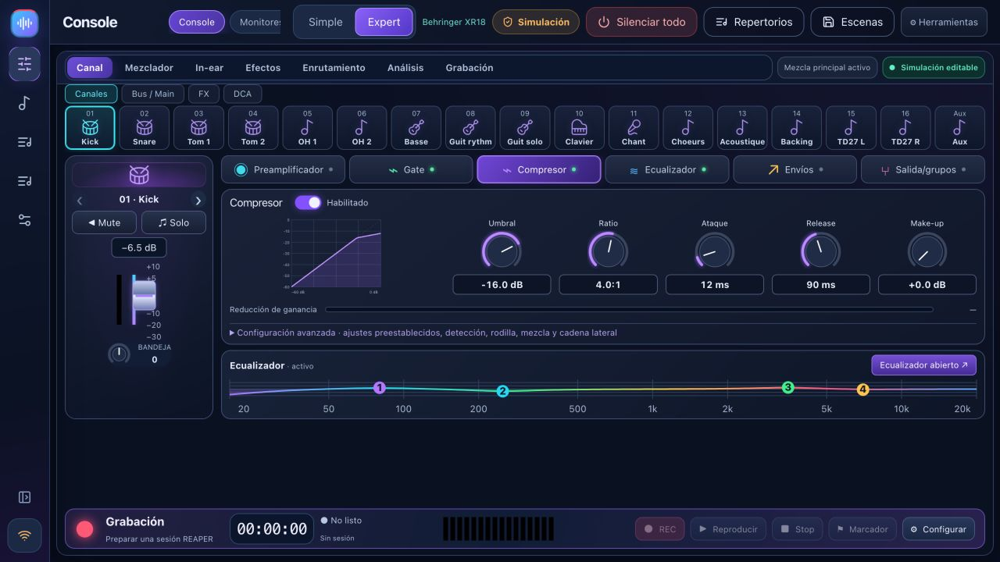

Entrenador de prueba de sonido
Seis pasos: conectar, mapear instrumentos, medir ganancia, solucionar problemas, preparar monitores y guardar. El entrenador lee las medidas de la mesa de mezclas, no el audio.
Prepare su prueba de sonido, mantenga su mesa de mezclas a la vista, proporcione a cada músico su propia mezcla de monitor y ensaye con pistas de acompañamiento. Gratis, local y creado para bandas.
XR18 / X18 · MR18 · XR12 / MR12 · X32 parcial: consulte las capacidades y la validación a continuación.

Français · English · Italiano · Español · Deutsch
Cambia el idioma en Ajustes → Opciones · Idioma, sin reiniciar. Los menús, controles, ayuda y confirmaciones siguen tu elección. Cada músico puede elegir su idioma en el teléfono.
La preferencia se guarda en este dispositivo; los nombres de tus canciones, escenas y músicos permanecen sin cambios. Se pueden agregar más idiomas a pedido. Solicitar un idioma
El diseño actual de BandPilot 2.2.4: canales de colores, procesamiento y monitores personales. Haz clic en una captura para ampliarla. Las capturas de detalle de abajo están en francés.


Los diseños personales recuerdan las canales visibles, el ancho de los canales y la visibilidad del panel de salida por modelo de mesa de mezclas y tamaño de pantalla. El panel de monitores reúne la mezcla, el ecualizador de bus y el compresor de cada músico.
REAPER bridge 1.2.3 aísla las solicitudes simultáneas y reintenta bloqueos de archivos transitorios sin repetir la orden de grabación.
Explorar 2.2.2 →Las funciones avanzadas dependen de la mesa de mezclas. La matriz explica qué está disponible y qué sigue siendo experimental.
Seis pasos: conectar, mapear instrumentos, medir ganancia, solucionar problemas, preparar monitores y guardar. El entrenador lee las medidas de la mesa de mezclas, no el audio.

Navegación compacta, bancos de canales, mezcla principal, buses, DCA y procesamiento de canales. El preamplificador, la puerta, la compresión, el ecualizador, los envíos, los efectos y el enrutamiento dependen del modelo.
Un enlace QR personal para cada músico y su bus únicamente. Faders, silencio, perfiles guardados y niveles limitados. Los permisos de control se actualizan sin recargar.
Con pistas de acompañamiento o con el grupo solo: secciones, tomas, formas de onda, presencia, reproducción original, loops y marcadores. Requiere puente REAPER 1.2.3.
Prepare una sesión, seleccione pistas, grabe WAV de 24 bits y monitoree el transporte. USB multipista en XR18/MR18/X18; XR12/MR12 utilizan una grabadora USB estéreo.

Biblioteca de canciones, setlists, ensayos y notas almacenadas en su computadora. Muestra transporte, secciones y finales de canciones con REAPER/ReaCue configurado.
Capture el estado de la mesa de mezclas, importe/exporte JSON, obtenga una vista previa de los cambios y mantenga una copia de seguridad antes de recuperarlo. La recuperación guiada de escenas excluye la alimentación fantasma de forma predeterminada.
Medidores y espectro X-Air, asesoramiento A/B, cuentas y diagnósticos opcionales. La IA conectada opcional utiliza su propia clave; ReaCue y las escenas nativas tienen límites documentados.

La simulación le permite explorar y preparar configuraciones. Los niveles simulados nunca se presentan como mediciones reales. REAPER sigue siendo una aplicación de audio real.
Discovery lee la identidad de la mesa de mezclas en su red local. El nombre, la marca y los controles se adaptan; Se rechazan los modelos desconocidos. Las conexiones comienzan como de solo lectura.
| Modelo | Capacidades | Estado en esta versión |
|---|---|---|
| Behringer XR18 / X18 | 16 tiras mono + Aux estéreo · 6 salidas Aux · 18×18 USB | Familia principal. Comprobaciones de hardware realizadas en XR18; X18 aún necesita confirmación. |
| Midas MR18 | 16 tiras mono + Aux estéreo · 6 salidas Aux · 18×18 USB | Perfil y protocolo probados en simulación; validación de hardware pendiente. |
| Behringer XR12 / Midas MR12 | 12 entradas · 4 preamplificadores de micrófono · 2 salidas auxiliares físicas | UI adaptada y límites. Grabación estéreo en memoria USB, sin interfaz multipista para PC. Validación de hardware pendiente. |
| Behringer X32 / Rack / Compact / Producer / Core | 32 canales · 16 buses · 8 DCAs · 6 matrices | EXPERIMENTAL / PARCIAL: mezcla, EQ, dinámica central y envíos. Compatibilidad completa con preamplificador, enrutamiento, efectos, medidores, escenas y USB no disponibles. |
Un montaje de capturas de pantalla de simulación de BandPilot 2.2, sin audio ni demostración de control de hardware. Capítulos y una transcripción acompañan el video.
Elija el instalador adecuado, explore la simulación, conecte el modo de solo lectura y prepare una copia de seguridad.
Guía completa →Seis pasos explicados, medidas reales, propuestas para revisar, monitores y una escena guardada.
Entrenador de prueba de sonido paso a paso →Instale bridge 1.2.3, abra su proyecto, verifique las pistas armadas, elija tomas y haga un bucle en una sección.
SEGADOR →Los instaladores se publican juntos después de las pruebas y comprobaciones de inicio de Windows, macOS y Linux. Consulte la versión de lanzamiento en la página de descargas.
BandPilot es el nuevo nombre de XR18 Studio. Haga una copia de seguridad de las escenas antes de actualizar; Se conservan los identificadores de datos heredados.
Cambios y limitaciones de la versión · Código fuente del MIT
Sí. BandPilot es gratuito y de código abierto bajo la licencia MIT. REAPER es un software independiente con su propia licencia.
No. Las características dependen del modelo y la validación. El soporte X32 es parcial y experimental. Verifique la matriz antes del uso en vivo.
No. Lee las configuraciones, medidores y medidas disponibles de la mesa de mezclas. Los consejos de escucha comienzan con su descripción y necesitan una revisión del oído.
El control local funciona sin internet ni cuenta. La computadora, la mesa de mezclas y los teléfonos deben compartir una red local. La IA conectada opcional requiere Internet y su propia clave API.
BandPilot es su nuevo nombre. El repositorio y los identificadores técnicos heredados se conservan para preservar el historial y los datos. Haga una copia de seguridad de sus escenas antes de actualizar.